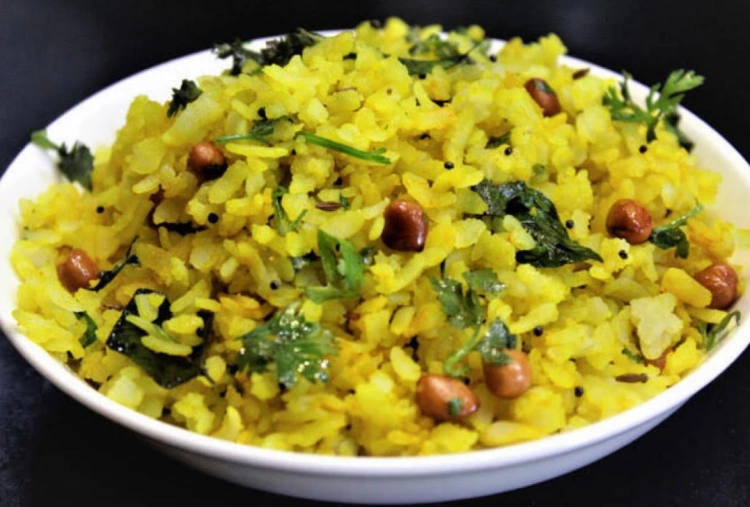

Poha

Description
Poha is a popular Indian breakfast dish made from flattened rice, typically seasoned with turmeric and mustard seeds,
and often garnished with peas, onions, and coriander.
Ingredients
- Flattened rice
- Turmeric powder
- Salts
- Chopped onions
- Green chillies
Steps
- Prepare the poha.
- Add turmeric powder.
- Add baked peanuts and spicies.
- Garnish and serve.